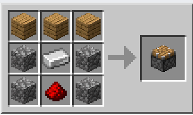
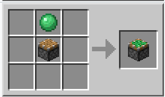

Pistone
| Nome | Pistone |
|---|---|
| Id | 172/173 |
| tipo | Blocco |
| Rinnovabile | si |
| impilabile | si(64) |
| attrezzo | qualsiasi |
| Resistenza esplosioni | 0.5 |
| durezza | 1.5 |
| luminositá | no |
| trasparenza | no |
| infiammabile | no |
I "pistoni" e i "pistoni appiccicosi" sono blocchi che, se attivati con un impulso di redstone non nullo, si espandono, spostando tutti i blocchi sull'asse di espansione, fino a un massimo di 12 blocchi. Se uno dei blocchi spostati è un blocco di slime, quest'ultimo sposterà insieme a se tutti i suoi blocchi adiacenti (anche i blocchi di slime e quelli da essi spostati contano nel massimo di 12). Quando il segnale di redstone si interrompe, i pistoni si ritirano e lasciano i blocchi come li ha spostati, mentre i pistoni appiccicosi ritirano indietro i blocchi con le stesse regole della spinta.
Fabbricazione
 Il pistone si puó fabbricare solo con il pietrisco e non con altri tipi di pietra, tre assi di legno che possono essere di tutti i tipi e un pezzo di redstone centrale.
Il pistone appiccicoso si fabbrica con un pistone normale e una palla di slime. la disposizione non conta.
Principali meccanismi
- Porte segrete
- Trampolino
- Ascensori
- Macchine volanti
- sistemi di automazione
- E molti altri ancora